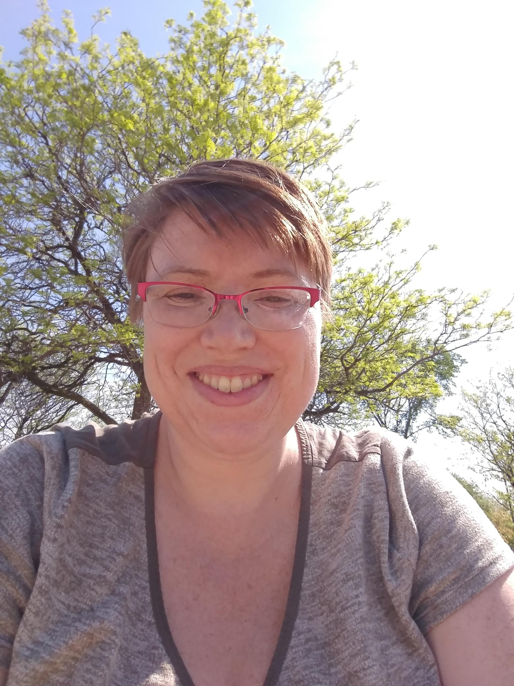

This is my home page, created to house my projects, both professional and fun. If you're here to see if I can help you out with some programming work, or to see if I'm a good fit for a job, welcome. This web page is very much under construction - but feel free to say hello.
This is me: 
I studied math (Combinatorics and Optimization) at the University of Waterloo, and have a MSc in Computer Science from the University of Toronto. I still love math, and have been working in a variety of roles since then, with some time off to attempt a PhD that I later abandoned.
I'm a bit of a tech generalist. My work experience includes some embedded programming, a bit of dev ops work, a very little bit of web programming, and a lot of C/C++. I'm interested in machine learning and any other mathematically focused problems, and have always had an interest in formal methods and proving the correctness of code. While I like a lot of agile, I like to make sure I'm working on projects where correctness and fitness for purpose is more important than raw speed. My ideal job involves a lot of learning, at least a little analytical skills and math.
Requirements Analysis - I like to isolate requirements from DevOps Skills - I'm very comfortable in a Linux environment, with most experience with Debian. I
I know for programming and technical jobs, establishing I have a very basic web programming demo here
I picked up a Prusa I3 MK3 recently. I've been enjoying getting to learn some quirks of 3D printing.
I have two children, Ronja and Anders, who take a lot of my time. I volunteer with the Girl Guides with Ronja, swim semi-competitively with a masters' team, and play bagpipes, most recently with Peel Regional Police pipe band. I also love camping and hiking, and I used to do a lot of sea kayaking. I may add some content related to some or all of these areas - I have an interest in STEM education, and I am always looking for new ways to introduce my love of math and science to my kids and their friends.
Here's my resume (.pdf format)
My github account
My thingiverse account
And here's my blog it's a new thing, but I'm hoping to write a bit about my technical learning.